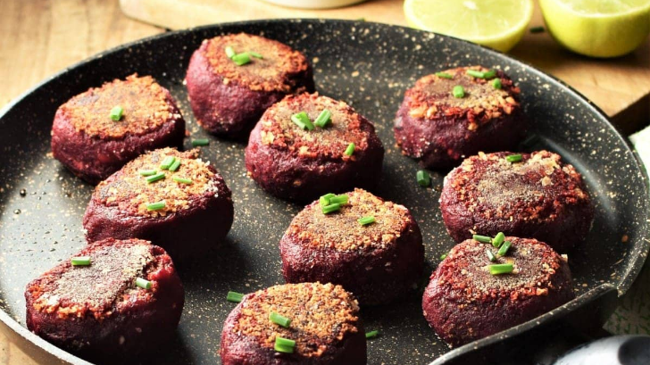

Beet patties

Crunchy on the outside, soft in the inside - these beef patties are a
perfect side to any dish. They're gluten-free and full of protein. They go
exceptionally well with a warm
red lentil dahl.
Ingredients
- 270 g beets
- 100 g canned lentils or cooked lentils
- 60 g red onion
- 1 cm fresh ginger root
- 2 garlic cloves
- 2 teaspoons curry powder
- salt
- pepper
- 15 g tomato concentrate
-
140 g gluten-free oat flour (all purpose flour can be used for non
gluten-free version)
- coconut oil
Steps
-
Cut the peeled beetroot into smaller cubes and throw it in a blender,
where it is thoroughly pureed.
-
Add the cooked lentils, chopped red onion, ginger, garlic, curry powder,
salt, pepper and tomato paste and blend all together until relatively
smooth.
-
In a bowl, mix the beetroot paste base with the oatmeal and form into 50
g balls. Place them on a baking tray lined with baking paper, press them
down to make flatter patties, and then, using a silicone brush, brush
each side with a little melted coconut oil.
-
Preheat the oven to 180°C and bake the meatballs for 40 minutes. Wait
5-6 minutes after they come out of the oven, so they peel off the baking
paper more easily.